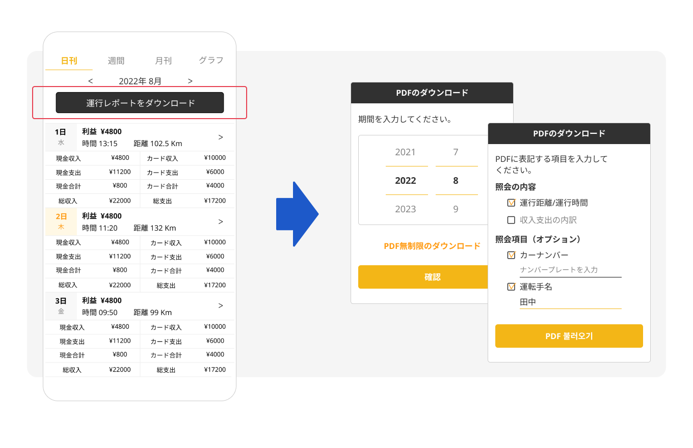
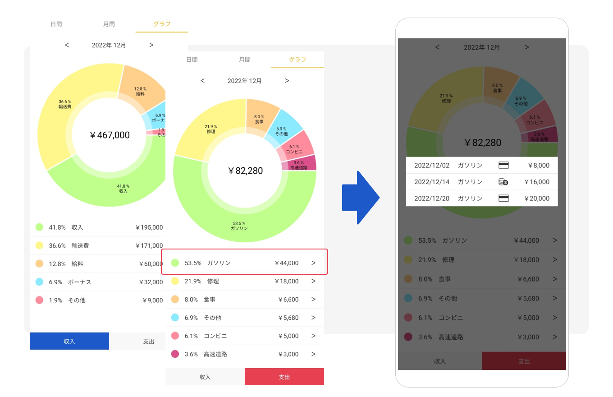
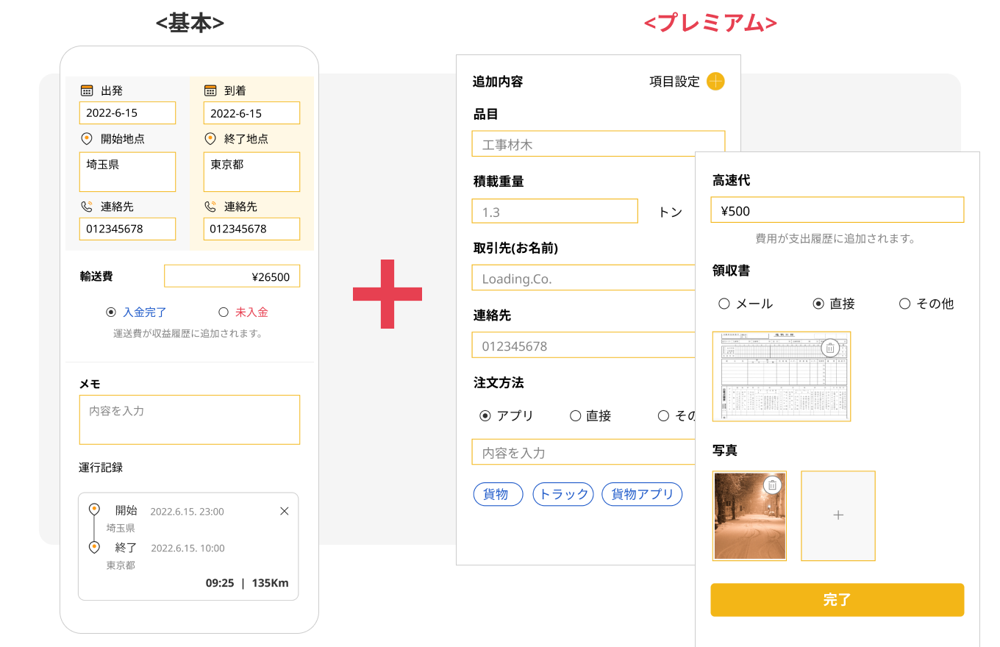
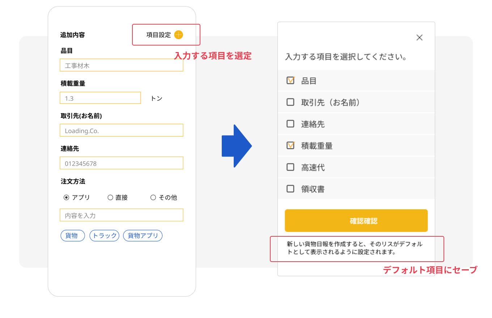
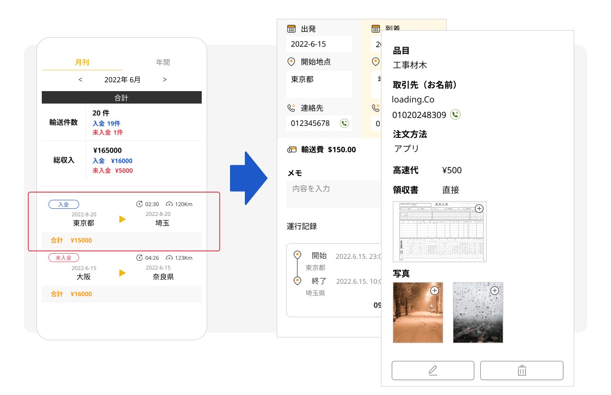

ハンドリングプレミアム
ハンドリングプレミアムサービスを利用してより多くの機能を利用してください。
- タップして移動 -
運行の記録(PDF)を制限なくダウンロード
収益のチャートの利用
プレミアム統計の利用
プレミアム輸送日報(貨物該当)
■ 運行の記録(PDF)を制限なくダウンロード
運行時間、距離、収益履歴をPDFに無制限にダウンロードして保管してください。
統計ページで運行記録をファイルにダウンロードします。
必要な期間と表記する内容を選択してファイルとして生成できます。/p>

ダウンロードしたPDFファイルは、スマートフォンやパソコンに保存して保存できます。
また、運行日報を出力して保管することができます。
運行履歴をさまざまな方法で保管してください。
■ 収益のチャートの利用
輸入支出の履歴をグラフで一目で分析します。
収益履歴と支出履歴を視覚化することで、簡単かつ迅速に収益状況を分析できます。
■ プレミアム統計の利用
統計グラフを利用して、運行収益、運行時間、運行距離の変化推移を確認してください。
運行記録を最近7日、月、年単位に細分化して表示します。
項目別に細分化されて構成されており、運行パターンを簡単に分析できます。
■ プレミアム輸送日報(貨物該当)
貨物輸送に必要な追加の入力項目を提供します。
基本項目よりも多くの項目を入力できます。
必要な入力項目で構成される個別化された輸送日報を作成できます。
貨物輸送の際に必要な情報を入力して、便利に輸送日誌を作成してください。
